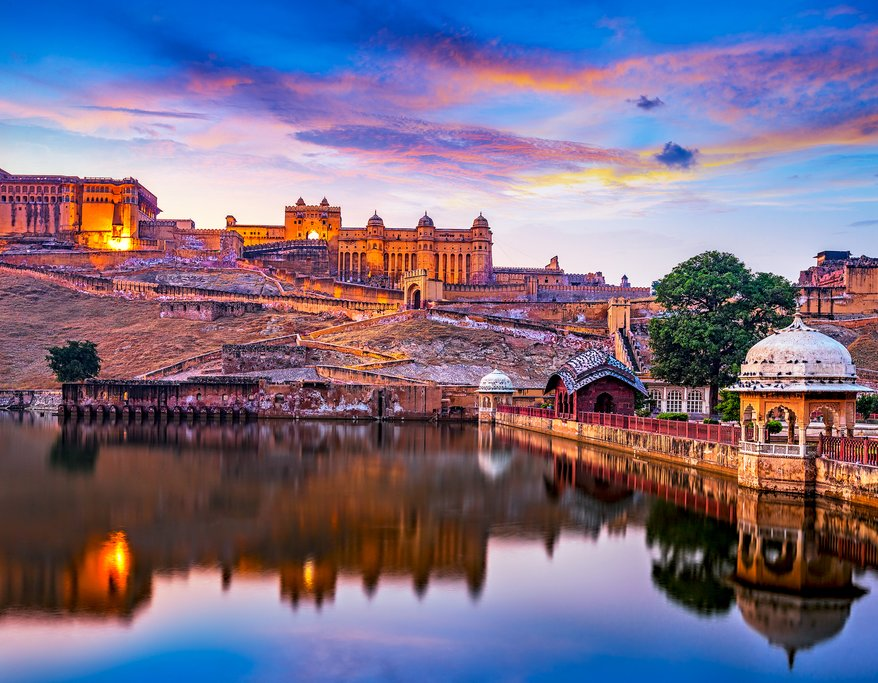
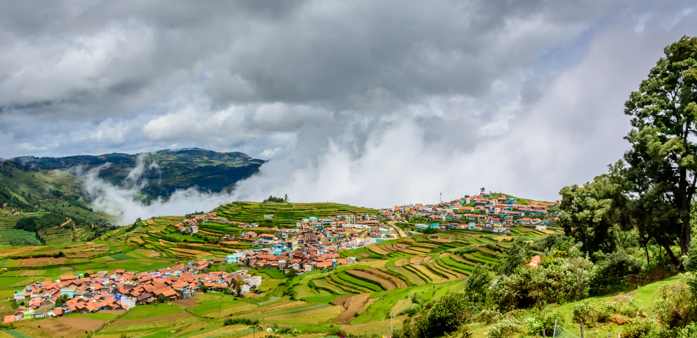
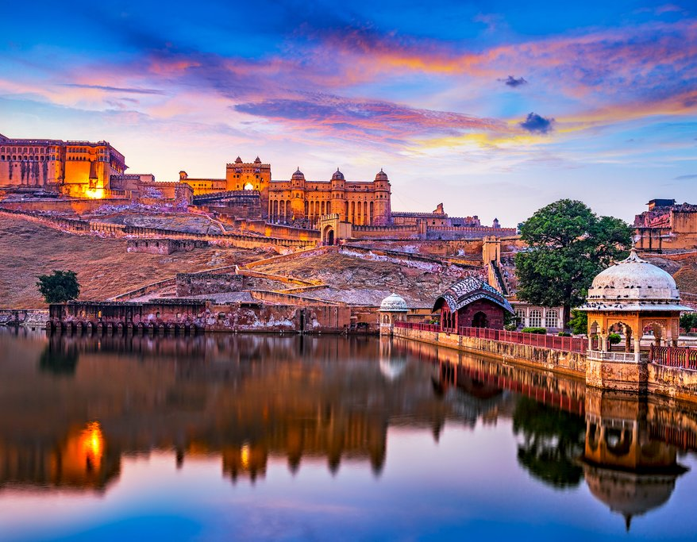
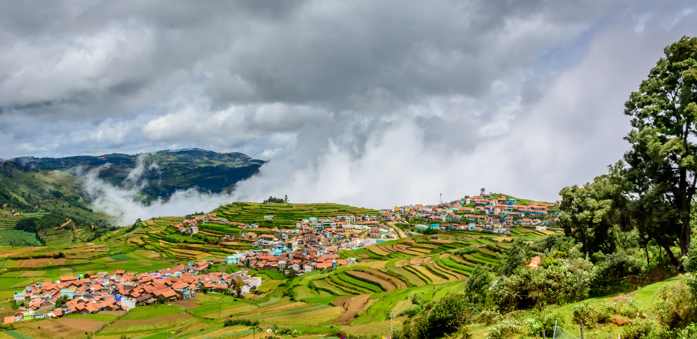
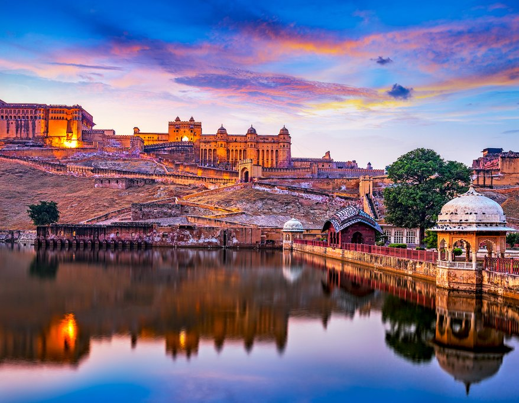
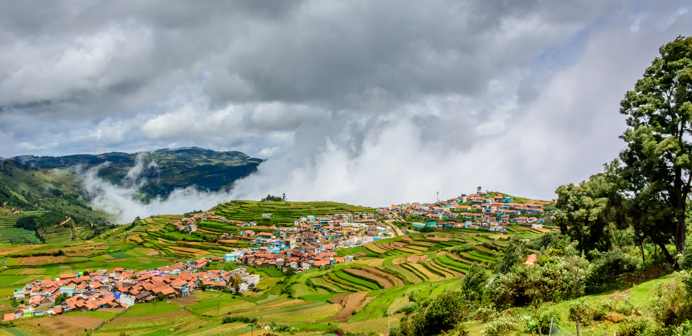

Travel is the movement of people between distant geographical locations. Travel can be done by foot, bicycle, automobile, train, boat, bus, airplane, ship or other means, with or without luggage, and can be one way or round trip. Travel can also include relatively short stays between successive movements, as in the case of tourism.The origin of the word "travel" is most likely lost to history. The term "travel" may originate from the Old French word travail, which means 'work'.[2] According to the Merriam Webster dictionary, the first known use of the word travel was in the 14th century. It also states that the word comes from Middle English travailen, travelen (which means to torment, labor, strive, journey) and earlier from Old French travailler (which means to work strenuously, toil). In English we still occasionally use the words "travail", which means struggle. According to Simon Winchester in his book The Best Travelers' Tales (2004), the words "travel" and "travail" both share an even more ancient root: a Roman instrument of torture called the tripalium (in Latin it means "three stakes", as in to impale). This link may reflect the extreme difficulty of travel in ancient times. Travel in modern times may or may not be much easier depending upon the destination. Travel to Mount Everest, the Amazon rainforest, extreme tourism, and adventure travel are more difficult forms of travel. Travel can also be more difficult depending on the method of travel, such as by bus, cruise ship, or even by bullock cart.
Travel dates back to antiquity where wealthy Greeks and Romans would travel for leisure to their summer homes and villas in cities such as Pompeii and Baiae.[9] While early travel tended to be slower, more dangerous, and more dominated by trade and migration, cultural and technological advances over many years have tended to mean that travel has become easier and more accessible.[10] Mankind has come a long way in transportation since Christopher Columbus sailed to the new world from Spain in 1492, an expedition which took over 10 weeks to arrive at the final destination; to the 21st century where aircraft allow travel from Spain to the United States overnight. Travel in the Middle Ages offered hardships and challenges, however, it was important to the economy and to society. The wholesale sector depended (for example) on merchants dealing with/through caravans or sea-voyagers, end-user retailing often demanded the services of many itinerant peddlers wandering from village to hamlet, gyrovagues (Wandering Monks) and wandering friars brought theology and pastoral support to neglected areas, traveling minstrels practiced the never-ending tour, and armies ranged far and wide in various crusades and in sundry other wars.[9] Pilgrimages were common in both the European and Islamic world and involved streams of travelers both locally (Canterbury Tales-style) and internationally.

Munnar, is a town and hill station on Western Ghats mountain ranges located in the Idukki district of the southwestern Indian state of Kerala. Munnar is situated at around 1,600 metres (5,200 ft) above mean sea level,[2] in the Western Ghats mountain range. Munnar is also called the "Kashmir of South India" and is a popular honeymoon destination.There are four major directions in Munnar; Mattupatty Direction, Thekkedy Direction, Adimaly Direction and Coimbatore Direction. The climate and tea plantations are the main reason for tourism in Munnar. Tourists come here to see the plush green carpet that is strewn all around. The tourist count increases every year with a major number during the months of April–May when summer vacations begin across the country. In 2018, a huge number of tourists is expected during the months of August–September when the kurinji blooms once in 12 years.
Goa is a state on the southwestern coast of India within the region known as the Konkan, and geographically separated from the Deccan highlands by the Western Ghats.It is surrounded by the Indian states of Maharashtra to the north and Karnataka to the east and south, with the Arabian Sea forming its western coast. It is India's smallest state by area and its fourth-smallest by population. Goa has the highest GDP per capita among all Indian states,[3][10] two and a half times as high as the GDP per capita of the country as a whole.[11] The Eleventh Finance Commission of India named Goa the best-placed state because of its infrastructure, and India’s National Commission on Population rated it as having the best quality of life in India (based on the commission’s “12 Indicators”).[11] It is the third-highest ranking among Indian states in human development index.
Manali is a resort and tourist town nestled in the mountains of the Indian state of Himachal Pradesh near the northern end of the Kullu Valley in the Beas River Valley. It is located in the Kullu district, about 270 km (168 mi) north of the state capital, Shimla, 309 km (192 miles) northeast of Chandigarh, and 544 km (338 miles) northeast of Delhi, the national capital. The small town, with a population of 8,096, is the beginning of an ancient trade route to Ladakh and from there over the Karakoram Pass on to Yarkand and Khotan in the Tarim Basin. It is a popular tourist destination and serves as the gateway to Lahaul and Spiti district as well as Leh.
Manali features a subtropical highland climate (Cfb) with warm summers, relatively cold winters, and a high diurnal temperature variation.

Jaipur is the capital and the largest city of the Indian state of Rajasthan. As of 2011, the city had a population of 3.1 million, making it the tenth most populous city in the country. Jaipur is also known as the Pink City, due to the dominant color scheme of its buildings. It is located 268 km (167 miles) from the national capital New Delhi. Jaipur was founded in 1727 by the Kacchawa Rajput ruler Jai Singh II,[9][10] the ruler of Amer, after whom the city is named. It was one of the earliest planned cities of modern India, designed by Vidyadhar Bhattacharya.[11] During the British Colonial period, the city served as the capital of Jaipur State. After independence in 1947, Jaipur was made the capital of the newly formed state of Rajasthan.

